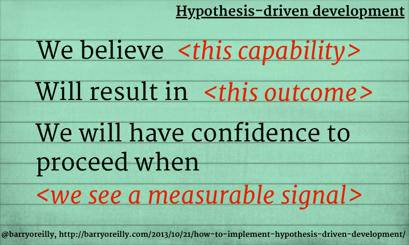

We balance data and intuition
We work data-driven, but we also trust our intuition which is trained by practical experience and theoretical knowledge. Not everything we do can be based on numbers.
Hypothesis-Driven (Product) Development
Many decisions we take when designing solutions are based on assumptions. Some of them will be right, some of them completely off.
If we make explicit what those assumptions are by phrasing them as hypotheses, we can find ways to verify them without even writing any code at all.
This is not only helpful when shaping a new feature but also when debugging an issue. We come up with a hypothesis about the cause for the issue and then think about ways to disprove it - usually it is easier to find reasons why the hypothesis is NOT true instead of trying to prove that it is true. With this approach we can quickly eliminate possible causes just by talking to domain experts before going too deep into fixing the problem.
Barry O'Reilly coined the term "Hypothesis-Driven Development", in which every feature we add to a system is based on a hypothesis with an expected outcome and a way to measure its results.
As the software development industry continues to mature, we now have an opportunity to leverage improved capabilities such as Continuous Design and Delivery to maximize our potential to learn quickly what works and what does not. By taking an experimental approach to information discovery, we can more rapidly test our solutions against the problems we have identified in the products or services we are attempting to build.1
This method can bridge the gap between our intuition and the need for dependable data. We phrase our hypothesis (which can be based on intuition) and do the change that will give us the data to verify it. That change can be a fake-door test, a customer survey or the minimum viable version of a new feature - whichever we need to learn from the data if we were right - and if we were, we can further invest into the feature.
As a side effect, we subconsciously train our intuition to make better assumptions in the future.

1. https://barryoreilly.com/explore/blog/how-to-implement-hypothesis-driven-development/ ↩